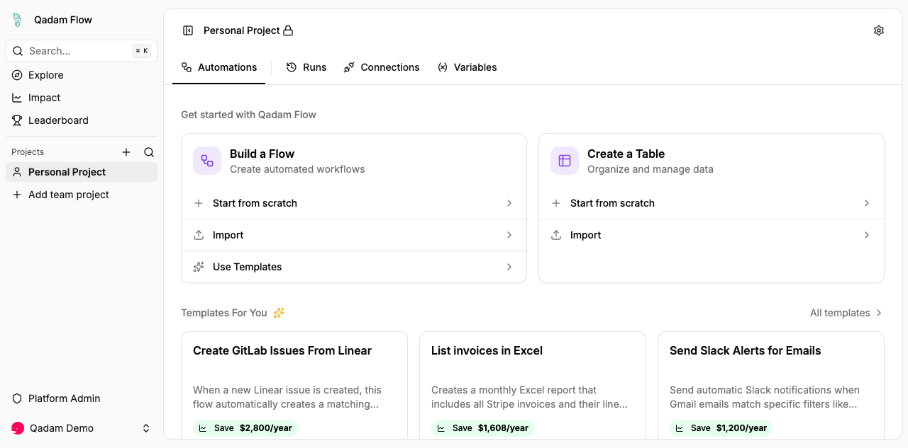
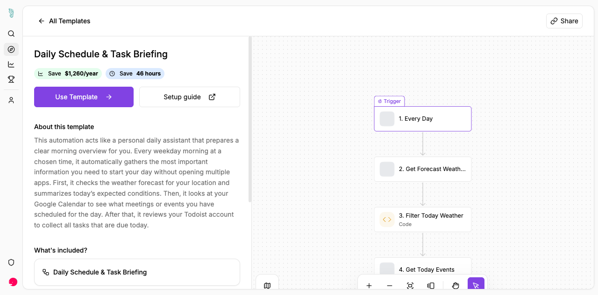
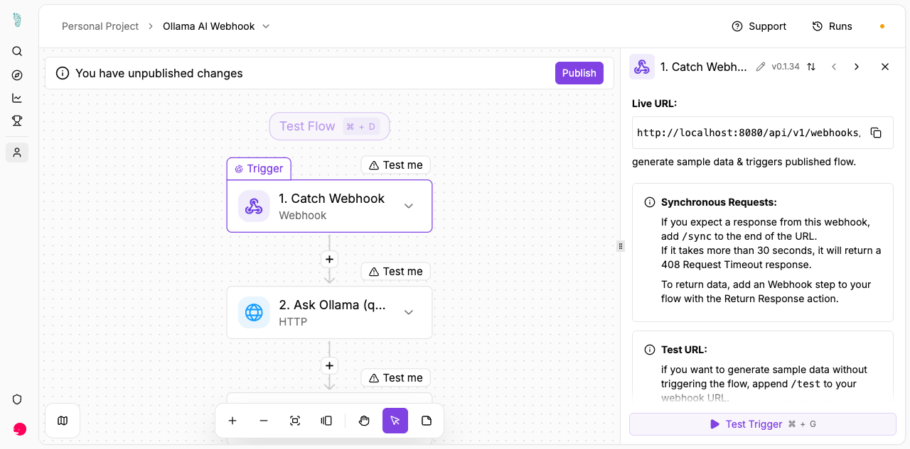
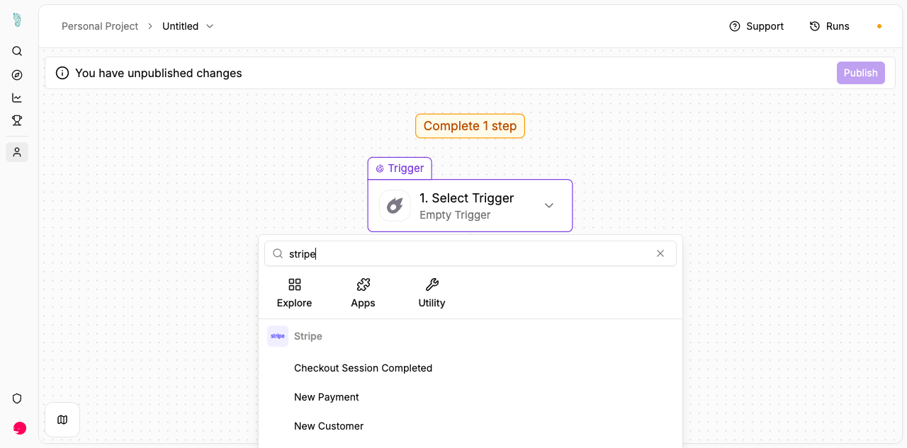
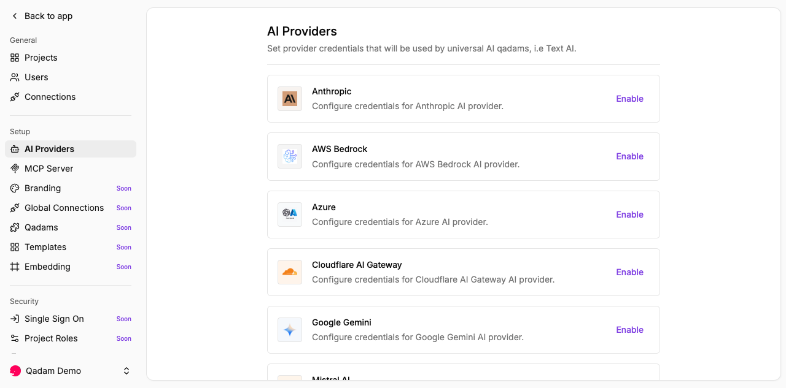
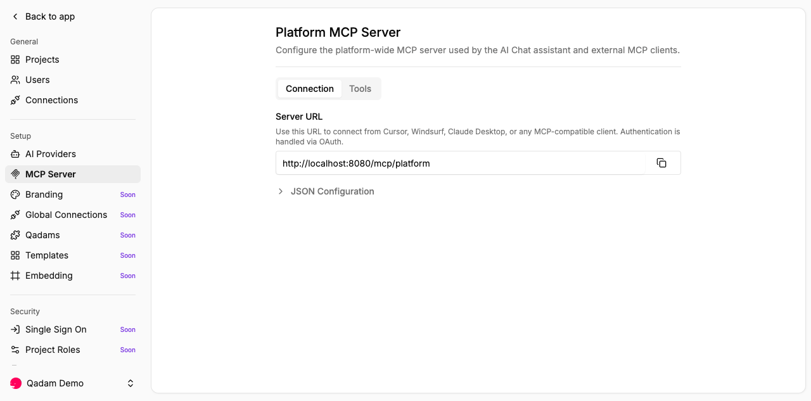
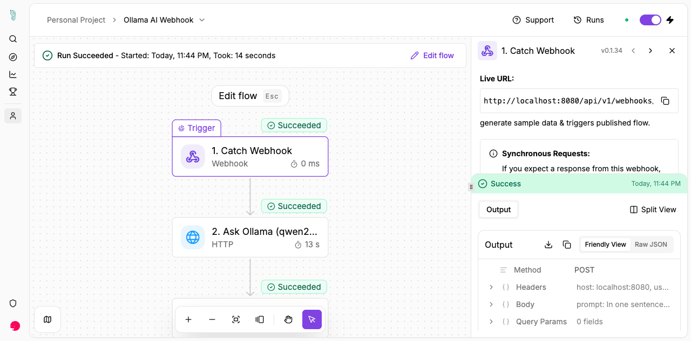
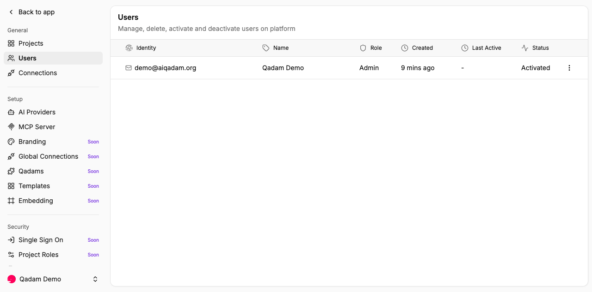
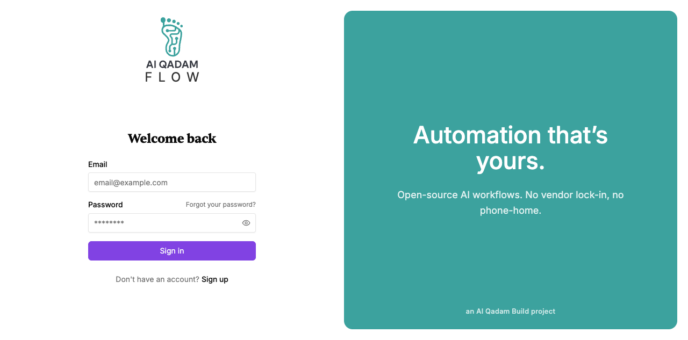

Qadam Flow is an open-source workflow automation platform. Visual flows, real integrations, AI as a first-class step. Self-hosted, no paid tiers, no enterprise paywall.

Pick from the library — every template ships with the full step graph, a setup guide, and measured time and cost savings. Or start from a blank canvas.
Browse the catalogue
A real flow: catch a webhook, send the prompt to a local Ollama (qwen2.5:7b), return structured JSON. No OAuth, no API key, no cloud LLM — the AI step doesn't have to leave your machine.


27 core + 211 community qadams inherited from the Activepieces ecosystem and free of enterprise gating. Not generic HTTP placeholders — concrete triggers like checkout.session.completed and typed actions for Slack, Notion, Postgres, S3, Stripe, and 200+ others.
Bring your own keys — Anthropic, AWS Bedrock, Azure, Cloudflare AI Gateway, Google Gemini, Mistral, or anything OpenAI-compatible (Ollama, vLLM, LM Studio). And every flow becomes an MCP tool — plug Qadam Flow into Cursor, Windsurf, or Claude Desktop and your automations show up natively.


Each run lands in a queryable history. Drill into any step to see what it received, what it returned, and how long it took. Retry, replay, debug — the run log is the source of truth, not your guesswork.


Platform → projects → users. Strong tenant isolation enforced at the query level. Runs on your servers, in your jurisdiction.
The MIT core of Activepieces has been forked and stripped of all enterprise code. 238 qadams and 252 templates ship today.
SSO, RBAC, and audit logs are scaffolded but not production-ready — they get built as real deployments need them, not on a fixed schedule. Don't run security-critical workloads on Qadam Flow yet. Details in the Roadmap.
Regional integrations (Payme, Click, Uzum, Kaspi) and Uzbek / Kazakh UI translations are planned but not yet built. Contributors are exactly where the project is leaning.
Maintained by AI Qadam — under the founder's stewardship for now, but structured to belong to the community (DCO, no copyright assignment).
A simple, meaningful start:
Write the integration the region needs — Payme, Click, Uzum, Kaspi, or any local API. About a day of work with the qadam-builder skill.
Uzbek and Kazakh are missing. No code required — translation strings live in JSON. Russian and 9 other locales are already shipped and can be polished.
Run it, break it, file an issue. A reproducible bug is half the fix. Self-hosters who report what doesn't work are gold.
Clone the repo, run one command, you're in. No sign-up, no telemetry, no vendor between you and your flows.
